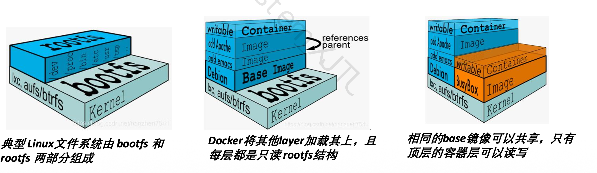

第7章：深度学习集群调度
本章主线
Info
多租户 GPU 集群里，作业怎么提交，环境怎么隔离，GPU 怎么分，资源不够时怎么抢占。
核心问题：作业生命周期、Docker 环境、Namespace 隔离、多资源公平、GPU 拓扑、碎片化、弹性和抢占。
Note
Job 生命周期；Image/Container 区别；Dockerfile 指令；镜像分层和 Copy-on-Write；Namespace 隔离；调度指标；DRF 的 dominant share；GPU 拓扑亲和性；HiveD 的 level/cell/buddy cell；弹性与抢占。
7.1 深度学习作业 Job 的生命周期
一个深度学习作业通常是：提交与排队 -> 资源分配与调度 -> 执行 -> 完成并释放资源。
7.2 Docker：镜像与容器
7.2.1 Docker 的作用
Docker 解决两个核心工程问题：
环境依赖问题；运行隔离问题。
深度学习作业依赖重，版本也挑剔。让每个用户自己配 CUDA、cuDNN、Python 包，最后大概率会变成环境排雷。Docker 的作用就是把环境打包好，换机器也能直接跑。
一次构建，随处运行。
7.2.2 Image 与 Container
Image 镜像
镜像是静态模板，用于打包运行环境。 包括：文件系统、系统库、运行时依赖、深度学习框架、用户代码。
特点：静态、只读、可共享、可复用。
Container 容器
容器是镜像运行起来后的实例。 特点：动态、可读写、有独立运行环境，提供进程、网络、文件系统等隔离。
对比表
| 对象 | Image | Container |
|---|---|---|
| 中文 | 镜像 | 容器 |
| 状态 | 静态 | 动态 |
| 是否运行 | 不运行 | 正在运行 |
| 读写性 | 只读 | 顶层可读写 |
| 作用 | 打包环境 | 执行作业 |
| 类比 | 类 | 对象 |
7.2.3 Docker Registry
Registry 用于存储和分发镜像。
主要用途：镜像共享、镜像版本管理、作业环境复现、集群节点拉取统一镜像。
7.2.4 Dockerfile
Dockerfile 用于描述镜像构建过程。
常见指令：
FROM ubuntu:20.04
RUN apt-get update
COPY train.py /workspace/train.py
WORKDIR /workspace
CMD ["python", "train.py"]
常见命令：
Example
给出 Dockerfile，问各指令作用：
| 指令 | 作用 |
|---|---|
| FROM | 指定基础镜像 |
| RUN | 构建镜像时执行命令 |
| COPY | 将本地文件复制进镜像 |
| WORKDIR | 设置工作目录 |
| ENTRYPOINT | 设置容器启动时执行的入口命令，不易被run命令覆盖 |
| CMD | 容器启动后默认执行命令 |
7.2.5 Docker 技术特点
Docker 的关键词：轻量级、标准化、环境一致、快速启动、隔离性。
为什么轻量
多个容器共享宿主机操作系统内核；镜像通过分层文件系统构造，多个镜像可以共享公共层；不需要像虚拟机一样启动完整 Guest OS。
为什么启动快
不需要启动完整操作系统，只启动隔离后的进程，镜像层可以复用。
7.2.6 Docker 镜像分层原理
分层结构
Docker 镜像采用分层结构。
镜像由多个只读层组成：

只有最上面的 container layer 可读写。Copy-on-Write
当容器修改某个文件时：
文件原本在只读镜像层中；Docker 先复制到容器可写层；修改发生在容器层；原始镜像层保持不变。
Tip
——为什么 Docker 镜像分层可以节省空间？
——多个镜像可以共享相同的 base layer，多个容器也可以共享同一份只读镜像层。容器的修改只保存在自身的可写层中，因此减少了磁盘占用并提升了镜像复用能力。
7.3 Namespace 隔离
Namespace 让容器看起来像有自己的一套系统环境。它隔离的是进程、网络、挂载点、主机名、用户等“视图”。
常见 namespace：
| Namespace | 作用 |
|---|---|
| PID namespace | 进程隔离 |
| NET namespace | 网络隔离 |
| MNT namespace | 文件系统挂载隔离 |
| IPC namespace | 进程间通信隔离 |
| UTS namespace | 主机名隔离 |
| USER namespace | 用户权限隔离 |
Example
填空
Docker 使用 namespace 实现命名空间隔离。
不定项选择
哪些属于 Docker namespace？
PID、NET、MNT、IPC、USER。
7.4 深度学习集群调度指标
调度系统常看这些指标：
| 指标 | 含义 |
|---|---|
| Throughput | 吞吐量，单位时间完成多少作业 |
| Makespan | 一批作业全部完成所需总时间 |
| Average Response Time | 平均响应时间 |
| Fairness | 公平性 |
| Utilization | 资源利用率 |
| SLA | 服务等级协议 |
| Locality / Affinity | 拓扑亲和性 |
| Fragmentation | 资源碎片化程度 |
7.5 Fairness：公平调度
Caution
分配资源要公平。 单资源时好判断，多资源时要看 DRF 的 dominant share。
7.5.1 Max-Min Fairness
Max-Min Fairness 适合单资源。它每次照顾当前拿到资源最少的用户，让最少者尽量多拿一点。例如只按 GPU 数量分配时，可以用这个思想。
7.5.2 DRF(Dominant Resource Fairness)
DRF 定义
DRF(Dominant Resource Fairness) 是多资源公平调度。深度学习作业会同时占 GPU、CPU、Host Memory、GPU Memory、Bandwidth，不能只盯一种资源。
做法：计算每个用户在每类资源上的占比；占比最大的那类资源叫 dominant resource；这个最大占比叫 dominant share。调度时优先照顾 dominant share 小的用户。
公式化理解
对于用户 A：
GPU share = A 使用的 GPU 数 / 集群总 GPU 数 Memory share = A 使用的内存 / 集群总内存 CPU share = A 使用的 CPU 数 / 集群总 CPU 数
A 的 dominant share = max(GPU share, Memory share, CPU share, ...)
Tip
记法：每次优先调度当前 dominant share 最小的用户。
DRF 例子
PPT 例题按这个思路看：

- 反推 从前两个 schedule 可以得到，A 的 dominant resource 是 RAM，B 的 dominant resource 是 GPU（比较每个任务中 resource 的占比即可）。
- 比较 比较谁的 dominant share 更小，就优先调度谁的任务。
Tip
给定集群资源和多个用户 task 需求，要求：
计算每个用户的资源占比，找 dominant resource，计算 dominant share，判断下一步调度谁。
解题步骤：
Step 1: 计算每类资源 share；Step 2: 对每个用户取 max share；Step 3: 找 dominant share 最小的用户；Step 4: 优先调度该用户的 task；Step 5: 更新资源分配，重复。
7.6 拓扑与亲和性 Affinity
Caution
多 GPU 作业的性能不仅取决于 GPU 数量，还取决于 GPU 之间的拓扑关系。
例如：
同一节点 8 GPU > 跨节点 8 GPU
原因：同一 PCIe switch 下通信更快；同一 CPU socket 下通信较快；跨 socket 变慢；跨机器最慢。
课件中的典型性能差异：
| 分配方式 | 性能影响 |
|---|---|
| Same PCIe switch | 最好 |
| Cross-switch | 可能约 50% slowdown |
| Cross-machine | 可能约 5x slowdown |
多 GPU 训练会频繁通信，所以调度器不能只数 GPU 个数，还要看这些 GPU 离得近不近。比如一个作业要 5 张 A100，另外 5 个作业各要 1 张 A100；集群里有一台 5 卡机器和两台 3 卡机器，通常应优先把 5 卡作业放到 5 卡机器上，避免跨机器通信。
7.7 配额(Quota)与资源碎片(Fragmentation)
Quota 表示某个用户、队列或租户拥有的资源配额。
例如：
User A: 10 GPU quota User B: 20 GPU quota
7.7.1 共享异常(Sharing Anomaly)
基于 quota 分配 GPU 时，可能出现共享异常。
虽然某个作业分配到了足够数量的 GPU，但这些 GPU 分散在不同 socket、不同 PCIe switch，甚至不同机器上，导致性能大幅下降。
7.7.2 GPU 碎片化(GPU Fragmentation)
GPU fragmentation 指 GPU 资源碎片化。常见原因：多用户动态申请和释放 GPU；作业大小不同；quota 只关注数量，不关注位置；大作业需要连续/亲和 GPU，但剩余资源已经被切碎。
Example
GPU 调度中，分配到足够数量 GPU 但性能下降，原因可能是 GPU 拓扑碎片化 或 sharing anomaly。
7.8 HiveD 调度算法
7.8.1 HiveD 解决的问题
HiveD 是面向 GPU 集群的调度算法。
它要解决的事很直接：多租户、GPU 拓扑感知、减少 fragmentation、保留高层级 cell，让大规模 GPU 作业更容易被调度，同时支持弹性与抢占。
7.8.2 HiveD 的层级 levels
HiveD 按 GPU 拓扑划分层级：
| Level | 含义 |
|---|---|
| Level 1 | single GPU |
| Level 2 | PCIe switch |
| Level 3 | CPU socket |
| Level 4 | node / server |
记忆：
GPU < PCIe switch < CPU socket < node
7.8.3 Cell
Cell 是 HiveD 中资源分配的基本单位，表示某个拓扑层级下的一组亲和 GPU。单个 GPU 是 Level 1 cell；同一 PCIe switch 下的一组 GPU 是 Level 2 cell；同一 CPU socket 下的一组 GPU 是 Level 3 cell；同一 node 内的 GPU 是 Level 4 cell。
7.8.4 Buddy Cell
Buddy cell 指同一层级中可以互相配合的 cell。它用来维护层级结构，支持 cell 合并与拆分，尽量保留高层级资源，减少碎片。
7.8.5 Buddy Cell Allocation Algorithm
算法维护 Binding 关系和每层级 free list。目标是尽可能保留 high-level cells，这样后面的大作业还有机会拿到拓扑更完整的资源。
可能考法简答
HiveD 如何减少 GPU 碎片？ 答： HiveD 将 GPU 拓扑抽象成多层级 cell，并通过 buddy cell allocation 尽量从合适层级分配资源，同时保留高层级 cell。这样可以减少 GPU 被零散占用的情况，为大规模多 GPU 作业保留拓扑亲和性更好的资源。
7.9 弹性(Elasticity)与抢占(Preemption)
7.9.1 弹性 (Elasticity)
弹性是：集群有空闲资源时，允许某些队列临时使用超过自身 quota 的资源。好处是提高利用率，少让 GPU 闲着。
7.9.2 抢占 Preemption
抢占是：资源紧张时，从超额使用资源的队列里收回一部分资源，拿去满足其他队列的 quota 或 SLA。
典型场景
APP1 和 APP2 均有 50% quota APP1 前期使用了超过 50% 的资源 APP2 后续提交任务但资源不足 调度器从 APP1 中抢占部分资源给 APP2
抢占的优点
提高 SLA、保证公平性、避免队列长期饥饿、保证 quota 生效。
抢占的缺点
被抢占作业可能变慢；深度学习作业若无 checkpoint，损失训练进度；抢占有调度和恢复开销。
可能考法：简答
弹性和抢占如何兼顾利用率与 SLA？ 答： 弹性让队列在集群空闲时临时超用资源，提高利用率；抢占在资源紧张时把超用资源收回来，保证 SLA 和公平性。
7.10 YARN 抢占机制
YARN 抢占的大致步骤：从过度使用资源的队列中选择 container；通知 Application Master；Application Master 尝试释放资源；若未释放，Resource Manager 强制回收资源。
可能考法：填空
YARN 中被抢占的基本资源单位通常是 container。
7.11 OpenPAI
OpenPAI(Open Platform for AI) 是一个 AI 集群管理平台，由 Docker、YARN、Kubernetes、HiveD 等组件构成。
7.11.1 分工
| 组件 | 作用 |
|---|---|
| Docker | 封装作业运行环境 |
| YARN | 资源调度 |
| Kubernetes | 静态资源管理 |
| HiveD | GPU 拓扑感知调度 |
| Web Portal | 用户提交和管理作业 |
| REST Server | 提供 API 接口 |
7.11.2 特点
支持多租户 GPU 集群、深度学习作业提交、容器化运行、GPU 作为一等资源、监控和管理、拓扑感知调度。